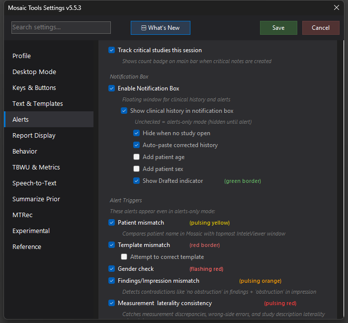

Clinical History / Notification Box
A floating box showing the current study's clinical history — cleaned up, with age/sex added and auto-pasted into the report — that doubles as the surface where all MosaicTools alerts appear.

What it does
A small floating window that follows your worklist: for each study it shows the clinical history, the patient's age and sex, and a green Drafted indicator border when the report already has an IMPRESSION (a draft in progress). It can also fix the history for you — when malformed history text is detected, MosaicTools auto-pastes a corrected version into the report, optionally prepending the patient's age ("65-year-old") and sex.
The same box is where MosaicTools' alerts appear: its border changes color per trigger — pulsing yellow for patient mismatch, red for template mismatch, flashing red for gender check, pulsing orange for findings/impression mismatch, pulsing red for measurement & laterality consistency, orange for Aidoc detections, red-orange for a mosaicAI triage reason, purple for stroke studies. Each alert has its own page; this box is where you see them.
How to turn it on / set it up
Settings → Alerts → Notification Box:
- Enable Notification Box — the master toggle (requires Mosaic scraping to be on).
- Show clinical history in notification box — uncheck for alerts-only mode: the box stays hidden until an alert fires.
- Hide when no study open — hides it between studies.
- Auto-fix clinical history — two independent toggles: paste the corrected history into the transcript box, and/or rewrite the CLINICAL HISTORY section of the final report in place (re-applied automatically when Process Report re-pulls the raw worklist history).
- Add patient age / Add patient sex — prepend these ("55-year-old female. ") wherever the auto-fix writes — transcript and/or final report (final-report support since 5.5.28; previously these only worked with the transcript option). Never doubles up when the history already starts with demographics ("65 yo M with…").
- Since 5.5.28 the cleaner also sentence-cases worklist Title-Case reasons ("Line Placement" → "Line placement") — eponyms (Graves disease, Down syndrome), acronyms, and names keep their capitalization.
- Show Drafted indicator — the green border for draft-in-progress studies.
Using it
There's nothing to trigger — it updates automatically as the background scrape follows your current study. Glance at it as each case opens: history, age/sex, drafted or not, and any alert color.
Tips & gotchas
- The stroke alert is clickable: with "Click alert to create Clario note" on, clicking the purple alert creates the Clario communication note.
- Alerts-only mode is popular with people who feel the box is one window too many — you keep the safety net without the always-on display.
- If the box shows nothing on studies with hyphenated accession numbers, update — parsing for those was fixed in 5.5.0.
- Since 5.5.29, a multi-paragraph clinical history is tidied into a single clean paragraph when age/sex is added to the report (earlier versions could leave blank lines between the sentences).
- As of 5.5.20 the box no longer "yells": a shouty ALL-CAPS coded reason (e.g. "ATYPICAL FACIAL PAIN") is sentence-cased for readability, while medical abbreviations, eponyms (Crohn), and proper names keep their capitalization.
- As of 5.5.22 a study triaged by Mosaic's mosaicAI shows the triage reason (e.g. "Suspected PE") in a red-orange banner — see the Triage Reason page.
- Fixed in 5.6.0 (data loss): a rare clinical-history cleanup could delete dictated transcript text when Mosaic briefly reordered its editors (usually around Process Report). The cleanup now identifies the report by its content rather than editor position and aborts safely if anything looks off, so it can never touch the transcript.